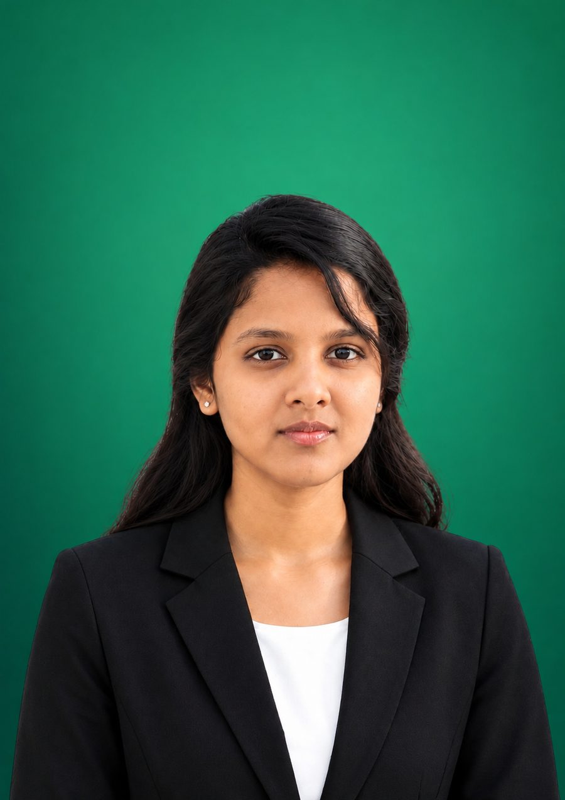

Digital Marketing & Lead Generation Specialist in Bengaluru
I turn prospects into pipeline: 1.5 years of B2B lead generation, email marketing and campaign analytics. Currently Lead Generation Team Lead at Edu Tantr.

I Build Pipelines That Convert
I’m Ayesha Khanum (also spelled Ayesha Khanam), a results-driven digital marketing and lead generation specialist based in Bengaluru, Karnataka, India.
At Edu Tantr I’ve grown from Marketing Associate to Senior Marketing Associate to Lead Generation Team Lead, managing a pipeline of 4,000+ prospects through segmentation, outreach, tracking and follow-up workflows, and contributing to 25% monthly pipeline growth.
With a B.E. in Computer Science and hands-on Excel, Power BI, SQL and Python, I turn campaign data into clear decisions: what worked, why, and what to do next.
I’m interested in content marketing, social media management and campaign analytics, and I’m open to new opportunities.
Digital Marketing & Lead Generation, Done With Data
Here is how I approach digital marketing in practice, based on my work at Edu Tantr and the tools I use every day.
Lead generation & qualification
I source and validate leads from multiple channels, then qualify prospects on budget, interest and timeline so only high-intent leads reach the sales team.
Email marketing & cold outreach
Daily cold-calling and email follow-up campaigns, with segmentation and tracking so every prospect gets the right message at the right stage.
Paid ads & web analytics
Working knowledge of Meta Ads Manager, Google Ads and Google Analytics (GA4), plus SEO fundamentals to support campaigns and content.
Marketing analytics & reporting
Excel dashboards, Power BI, SQL and Python to measure campaign effectiveness, spot what works and report clearly to the team.
Based in Bengaluru (Bangalore), Karnataka, India, and open to digital marketing, lead generation and marketing analytics roles. See my work experience or download my resume.
Why Choose Me
What I bring to a marketing or lead generation team.
End-to-end lead generation
Sourcing, validating, qualifying and handing off high-intent leads to sales.
Data-driven optimization
Excel dashboards and trackers that improved reporting accuracy and cut weekly reporting time.
Multi-channel outreach
Cold calling, email follow-up campaigns, Meta Ads Manager and Google Ads.
Sales alignment
Close partnership with sales to improve lead qualification and conversion outcomes.
Team leadership
Guiding teammates on outreach approaches, reporting standards and lead management.
Technical foundation
B.E. in Computer Science, with Python, SQL, Pandas and cybersecurity exposure.
My Work Experience
Lead Generation Team LeadCurrent
Edu TantrJun 2026 – Present · Bengaluru
Lead Generation Team LeadCurrent
Edu Tantr- Lead daily lead generation operations and outreach, maintaining a high-performing acquisition pipeline.
- Manage and optimize 4,000+ qualified leads through tracking, segmentation and follow-up workflows.
- Supervise lead qualification and ensure timely handoff of high-intent prospects to the sales team.
- Contributed to a 25% increase in monthly lead pipeline growth through data-driven optimization.
- Guide team members on outreach approaches, reporting standards and lead management practices.
Senior Marketing Associate
Edu TantrDec 2025 – Jun 2026 · Bengaluru
Senior Marketing Associate
Edu Tantr- Executed outreach campaigns and monitored conversion performance across a 4,000+ prospect pipeline.
- Built Excel dashboards to measure campaign effectiveness and improve reporting accuracy.
- Partnered with sales to improve lead qualification and conversion outcomes.
Marketing Associate
Edu TantrJun 2025 – Dec 2025 · Bengaluru
Marketing Associate
Edu Tantr- Sourced and validated leads from multiple channels, reducing disqualified leads by an estimated 20%.
- Ran daily cold-calling and email follow-up campaigns, qualifying prospects on budget, interest and timeline.
- Developed Excel trackers for campaign performance monitoring, cutting weekly reporting time.
Cybersecurity Intern
Ashtaksha LabsFeb 2025 – Jul 2025 · Karnataka
Cybersecurity Intern
Ashtaksha Labs- Performed internal vulnerability scanning, reviewed network logs and documented findings.
- Supported firewall rule testing and network monitoring; improved security documentation.
Data Science Trainee
Cranes Varsity Pvt. Ltd.Nov 2023 – Dec 2023 · Bengaluru
Data Science Trainee
Cranes Varsity Pvt. Ltd.- Built Power BI dashboards; performed data cleaning and EDA using Python, Pandas and SQL.
My Key Results
4,000+ Prospect Pipeline Managed
Edu Tantr25% Monthly Pipeline Growth
Edu Tantr~20% Fewer Disqualified Leads (estimated)
Edu Tantr · Marketing AssociateExcel Dashboards & Trackers for Campaign Reporting
Edu TantrMarketing Associate to Lead Generation Team Lead
Edu TantrSkills & Tools
Marketing
Analytics & Tools
Soft Skills
Where I Studied
B.E., Computer Science Engineering
VTU · CGPA 8.07Pre-University, PCMB
St. Anne’s PU College · 85.17%10th Standard
Natya Saraswathi Higher School · 82.08%Certifications
Basic Python
HackerRankData Science in AIML
Cranes VarsityCybersecurity Internship
Ashtaksha LabsQuick Answers
Who is Ayesha Khanum?
Ayesha Khanum is a Digital Marketing and Lead Generation Specialist based in Bengaluru, Karnataka, India, with 1.5 years of experience in lead generation, email marketing, campaign execution and performance tracking. She currently works as Lead Generation Team Lead at Edu Tantr.
What does Ayesha Khanum do?
She runs lead generation and outreach operations, qualifies prospects, builds Excel and Power BI reporting, and optimizes campaigns using data. She has managed a pipeline of 4,000+ leads and contributed to 25% monthly pipeline growth.
How do I find Ayesha Khanum online?
Search for “Ayesha Khanum digital marketing Bengaluru”, visit this portfolio, or find her on LinkedIn. Her name is also sometimes spelled Ayesha Khanam.
Where is Ayesha Khanum based?
She is based in Bengaluru (Bangalore), Karnataka, India.
Which marketing tools does Ayesha Khanum use?
Meta Ads Manager, Google Ads, Google Analytics (GA4), Excel dashboards, Power BI, SQL, Python, Pandas, Canva and CRM tools.
How can I hire or contact Ayesha Khanum?
Email ayeshakhanum862@gmail.com or connect on LinkedIn. She is open to digital marketing, lead generation and marketing analytics roles.
Let’s Start Your Next Digital Project
Open to roles in digital marketing, lead generation and marketing analytics.